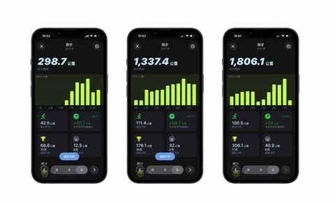
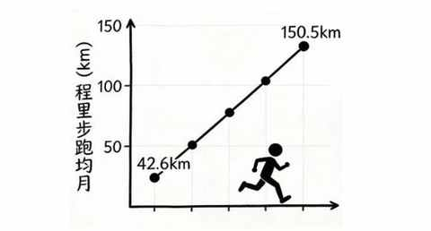
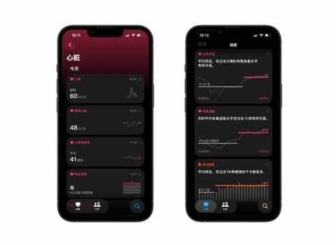
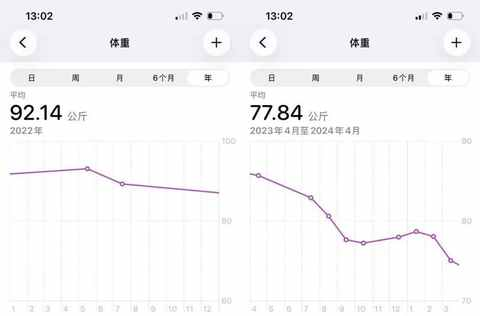
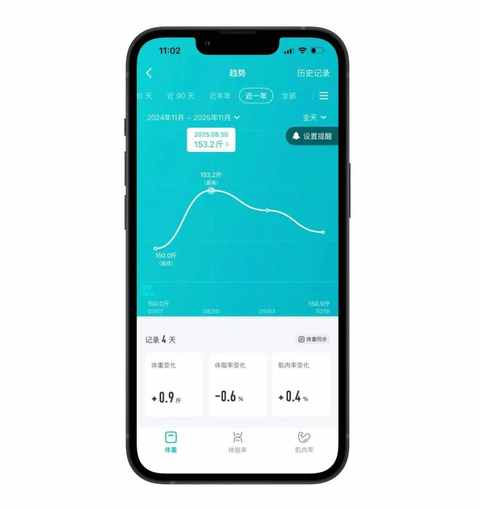
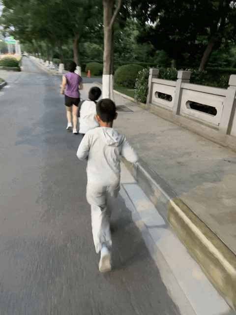

90年，35岁，跑步30个月，3442km，带来的5个改变
一、引子
在盘点数据的时候发现，我是从 2023 年的 6 月份开始跑步的，满打满算已经 30 个月，总计完成 3442km，月均 114.7km。

从上图的信息中不难看出，每年的跑步里程呈现一个明显的上升趋势，从第一年的月均 42.6km 到今年的月均 150.5km。

坚持跑步，于悄然中，带来了一些变化。
二、跑步带来的 5 个改变
跑步带来的改变，有些是意料之中的，有些是意料之外的，毋庸置疑的是，跑的每一步都算数！
1️⃣ 心肺能力提高明显
比较具体的表现是：当电梯维护的时候，爬楼梯一口气上好几层，都不会喘，还能帮和我一起爬楼梯的阿姨提下东西。

通过上图可以看到，具体在数据上的表现是：静息心率和有氧适能，静息心率基本都在 50 以下，有氧适能位置在偏高的水平。
心肺能力的提高也会让每天的精力变好，即使头天晚上没睡好，对第二天的影响也很有限，中午稍作休息便能恢复满血状态。
2️⃣ 成功减肥
跑步，是减肥的那半年，最主要的两个有氧运动之一。

当时会隔天骑行或跑步，这两个运动方式都很适合用于减肥，不过减肥的核心依然在于少吃，多动能起到很好的打辅助的效果。
在跑步的辅助下，不仅 成功 减肥，也真心爱上跑步这项运动。
3️⃣ 让维持体重更简单
如果你问我，还有比减肥更难的事的吗？那我的回答必然是：有！
长期维持体重，比短期的减肥难几倍都不止！
几个月忌口和多运动相对容易做到，难的是一直忌口一直保持运动，经过两年的摸索，我逐步把跑步作为最主要的运动，过程中有发布三篇总结文章：
- 燃脂效率比拼：9种运动一年的热量消耗分析
- 跑步 or 骑行：一年有氧运动的个人体验与建议
- 从骑行转到跑步：一个中年人两年有氧运动的变化
总的来说，跑步让维持体重更简单，在饭量和减肥前相比较，并没有减少的基础上，体重得以位置在 75kg 上下浮动，大概在2-3kg 的范围。

4️⃣ 加深了对自身的了解
① 喜欢独自跑步
虽然一个人跑步，有时候稍显枯燥和乏味，有时候难免和流浪狗来个偶遇，但依然坚持一个人跑在马路上跑，这是我很好的恢复和获取能量的方式。
3000km实测，一个人跑步的真相：在享受自由的同时，也要面对提高的不易
② 髋部不够灵活
由于髋部的不灵活，带来了一系列的小问题，例如：对跑步鞋的稳定性要求高、无法送髋、步幅受限……
一双 “问题” 跑鞋带来的顿悟：问题的答案藏在细节里……
中年初跑者增加跑量两个月后，对如何选跑鞋有了 3个新思考
③ 潜能需要被激发
在日常跑步中，我几乎跑不出来比赛时候的配图，能感觉到自己有余力但无法调动出来，在比赛的时候这些“余力”，能快速迸发出发。
其另一个表现是，在家做一些力量练习的时候，即使找了节奏紧凑的跟练视频，也很容易摸鱼，做不到全力输出。
但去到健身房，即使没有教练在身边，也能练得比在家到位很多。
5️⃣ 带动身边的人运动
这一改变，属实是情理之外意料之中。
之前十多年，一直坚持的运动是篮球，让对篮球不感兴趣的老婆孩子一起去打 很难 ，与充满对抗的篮球相比，跑步是很不一样的运动，更简单更纯粹更本能。

带人跑步有感：有难度、有收获、有意义
三、结语
回望这3442公里，每一步都算数， 它早已超越了数字本身。
它用最朴素的方式告诉我：真正的旅程，是用脚步去丈量世界， 让我看清了身心的潜能，并意外地收获了带动他人的快乐。
前路还长，我愿继续带着这份收获，跑向下一个里程。
近期文章
真香！坚持使用小鹤双拼一年后，这4个感受不吐不快
农村、大专生、笨小孩：我的来时路
双持党的秋冬体验：当指纹识别频频失效，才懂得FaceID的好处
不思考，你就会买很多并不需要的东西
别再问我省多少油钱了！作为 8年新能源车主，我想说
35岁的这个11月，我竟挑战了这么多“第一次”
90年，35岁，日更90天，有了这 3 个意外收获
听播客5年，日均108分钟：这3个收获，让我认识到“声音”的力量
小米高端化成了吗？拿15S Pro当主力机4个月，我有这5个真实感受
嘿！还记得“为QQ等级挂机”的岁月吗？来晒晒你的等级吧！
中年减肥成功2年后，才发现运动形式真不重要